Linha Sul
Sentido Carlito Benevides
| Primeiro | Último | |
|---|---|---|
| Segunda a sexta | 05:42 | 23:20 |
| Sábado | 05:42 | 23:18 |
| Domingo | sem operação (só em dias especiais) | |
Nos dias úteis, passa a cada ~18 min no pico, ~22 min no resto do dia.
Início › Estações › José de Alencar
Estação de metrô · Fortaleza
Quem dá nome à estaçãoA estação fica na praça que homenageia o escritor José de Alencar (1829–1877), autor de Iracema, nascido no Ceará. Saiba mais ›
📍 Av. Tristão Gonçalves, 511 – Centro
Carregando os horários de hoje…
⚠️ Estação subterrânea: o sinal do celular costuma falhar. Leve dinheiro ou deixe o Pix aberto antes de descer.
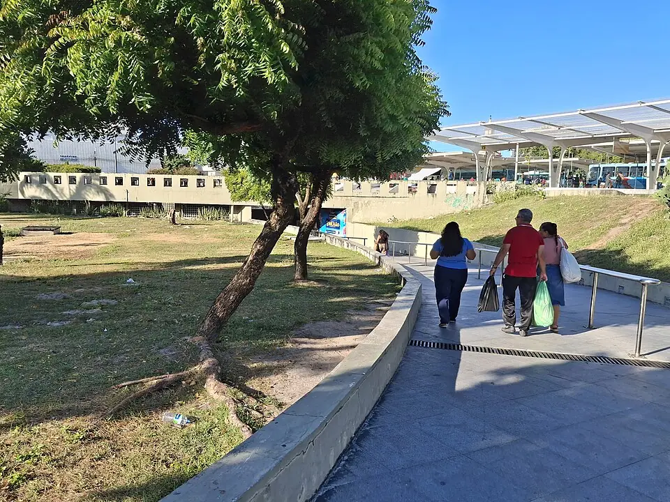
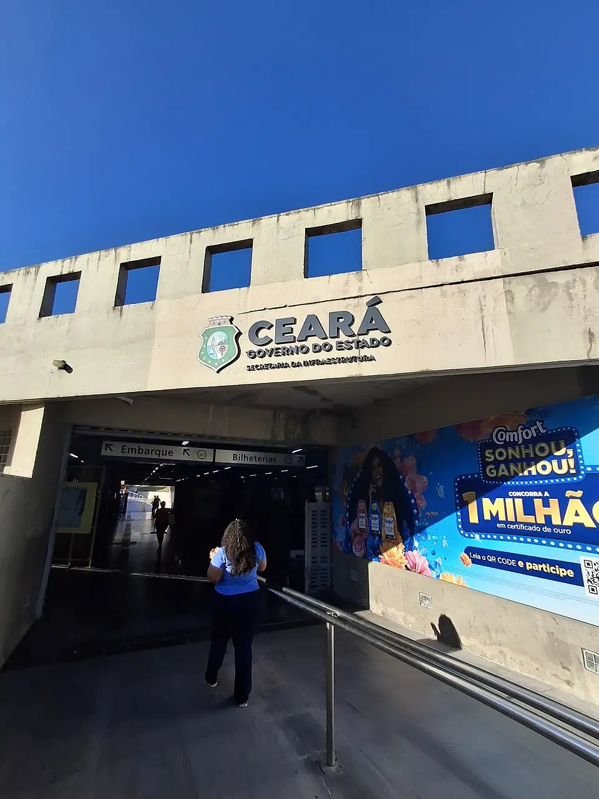
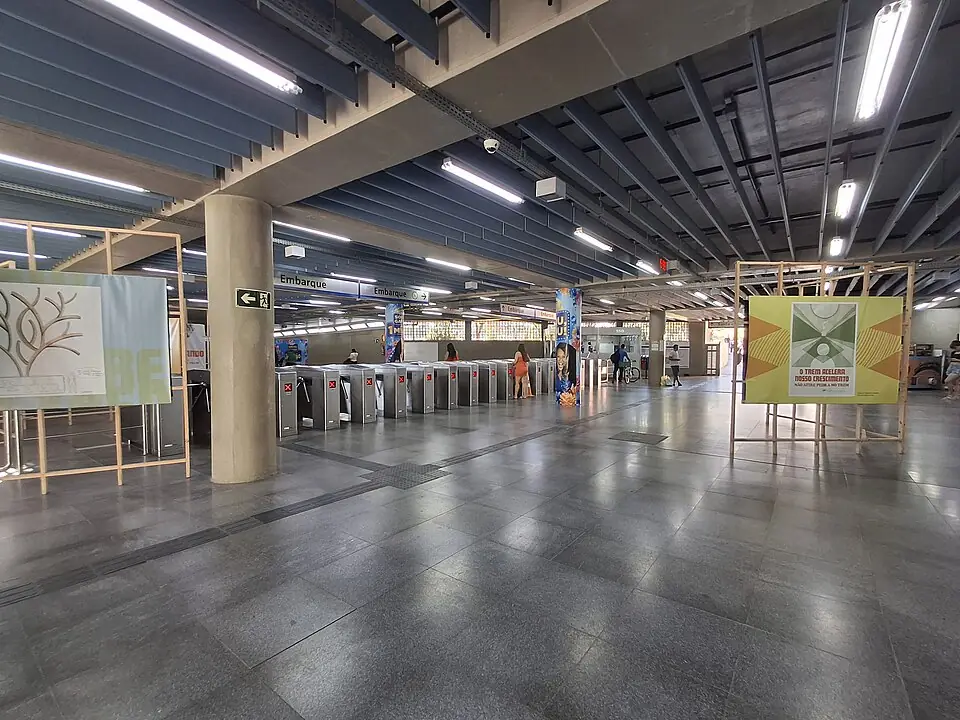
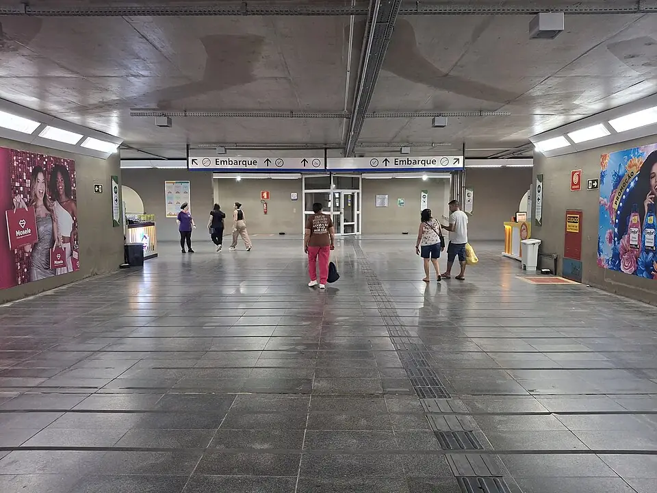
Mais 9 fotos no fim da página ↓ · Fotos do Wikimedia Commons (reduzidas para o site), de quem fotografou e liberou o uso. Toque no nome para ver a original.
Linha Sul
| Primeiro | Último | |
|---|---|---|
| Segunda a sexta | 05:42 | 23:20 |
| Sábado | 05:42 | 23:18 |
| Domingo | sem operação (só em dias especiais) | |
Nos dias úteis, passa a cada ~18 min no pico, ~22 min no resto do dia.
Linha Sul
| Primeiro | Último | |
|---|---|---|
| Segunda a sexta | 06:07 | 23:55 |
| Sábado | 06:07 | 00:56 |
| Domingo | sem operação (só em dias especiais) | |
Nos dias úteis, passa a cada ~18 min no pico, ~22 min no resto do dia.
Em feriado, eleição, ENEM e eventos o Metrofor costuma mudar o horário: as próximas partidas acima já mostram o aviso quando há operação especial anunciada.
Linha Sul › · 2ª de 20 estações
No projeto, chamava-se Estação Lagoinha, o apelido da Praça Capistrano de Abreu, do outro lado da avenida. Em 2010 ganhou o nome da Praça e do Theatro José de Alencar, homenageando também o escritor.
Fonte: Wikipédia · Os nomes de todas as estações ›
🛗1Elevador
↗2Rampa
⇅2Escada rolante
🪜2Escada
Dados do Metrofor. Um elevador pode estar parado para manutenção.
Estação subterrânea: fica debaixo da terra, e o sinal do celular costuma falhar lá dentro.
Todos os metrôs e VLTs têm espaço para cadeira de rodas. Encontrou algo diferente? Conte pelo WhatsApp.
18 lugares a até 1 km a pé, pelas ruas.
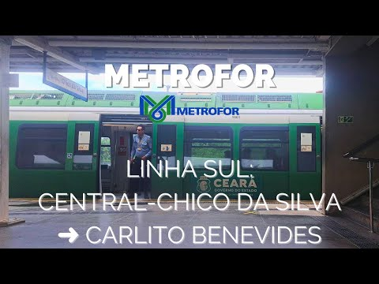
Assistir: Linha Sul de ponta a ponta: Chico da Silva ➜ Carlito Benevides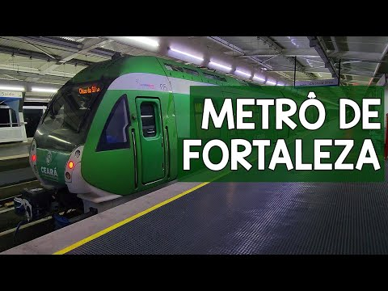
Assistir: Metrô de Fortaleza/Ceará (Metrofor) - Vídeo 5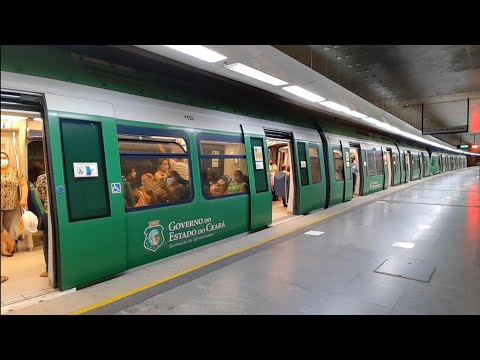
Assistir: Estação José de AlencarVídeos públicos do YouTube, de quem gravou e publicou; o crédito é de cada canal. O vídeo só carrega do YouTube quando você toca para assistir.
José de Alencar, Iracema (1865, romance)
A estação fica na Praça José de Alencar, que homenageia o escritor nascido no Ceará, autor de Iracema.
2021
Fotografias de estudantes sobre o dia a dia do metrô, expostas nas estações Benfica e José de Alencar.
2023
Fotografias em tamanho grande no saguão da José de Alencar, um painel na fachada da Parangaba e lambe-lambes nos muros da Linha Sul no Mondubim, em frente ao Minimuseu Firmeza.
2017
O projeto Estação Cultura, do Metrofor com a Secretaria da Cultura, abriu com um coral de crianças cantando para os passageiros na hora de maior movimento.
desde 2022
A estação de 1880, de onde partiam os trens do Centro, virou um complexo cultural com a Pinacoteca do Ceará e o Museu Ferroviário. Lá está o painel de azulejos que Descartes Gadelha fez em 1970 para o centenário da ferrovia, “Trem para o Futuro”, da maria-fumaça ao diesel.
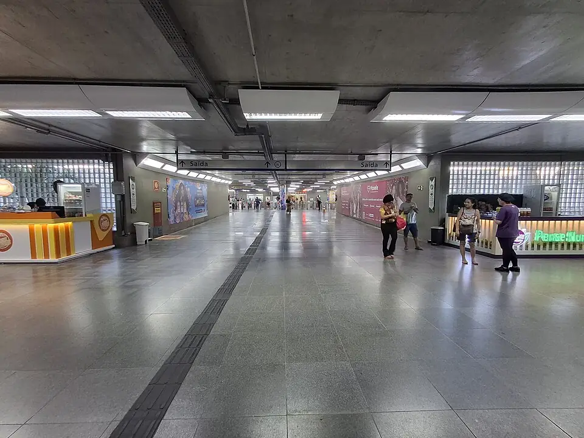
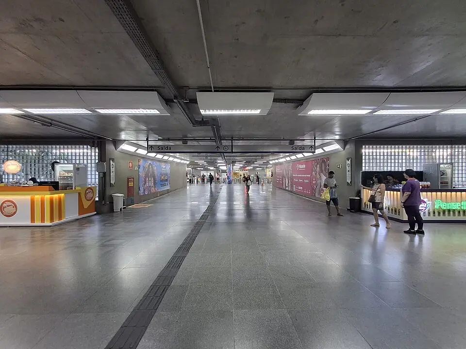
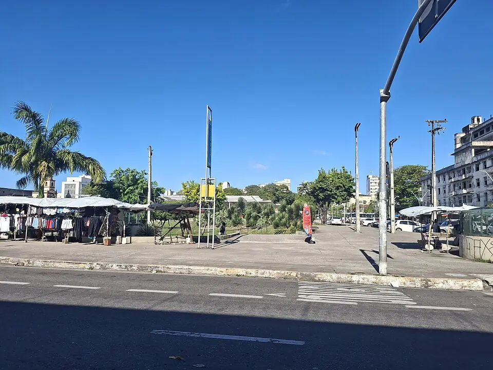
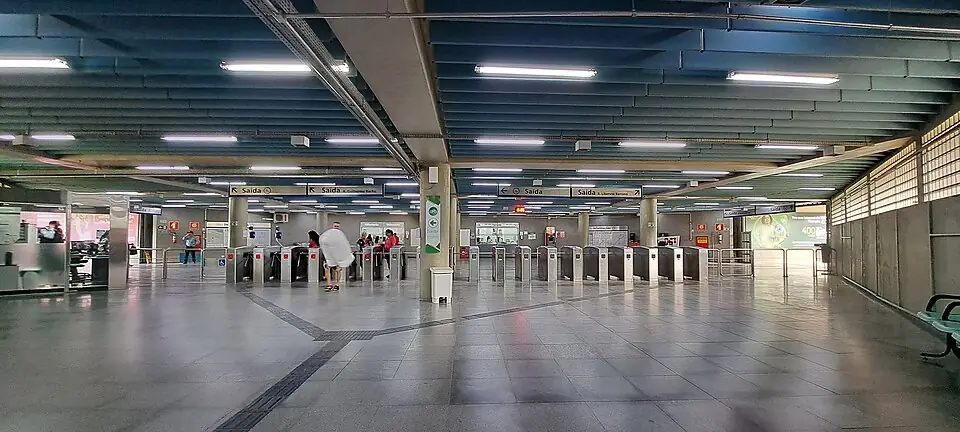
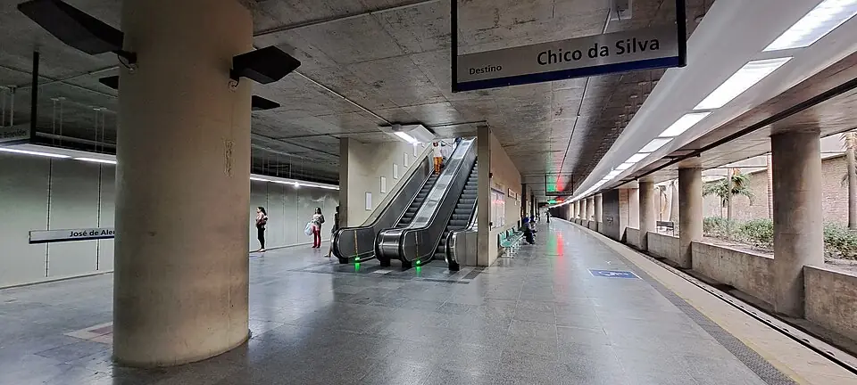
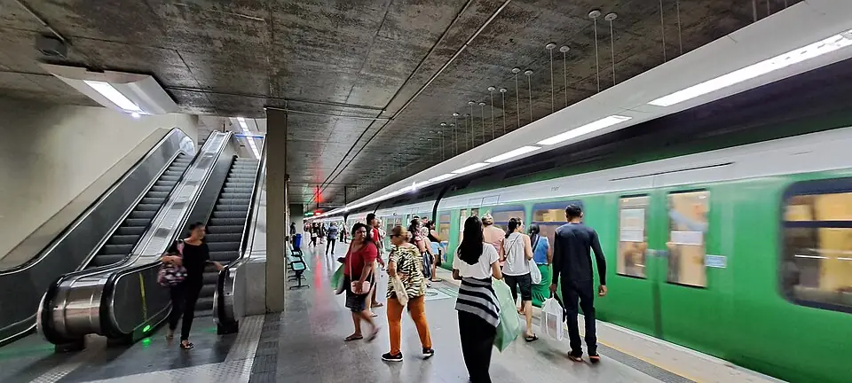
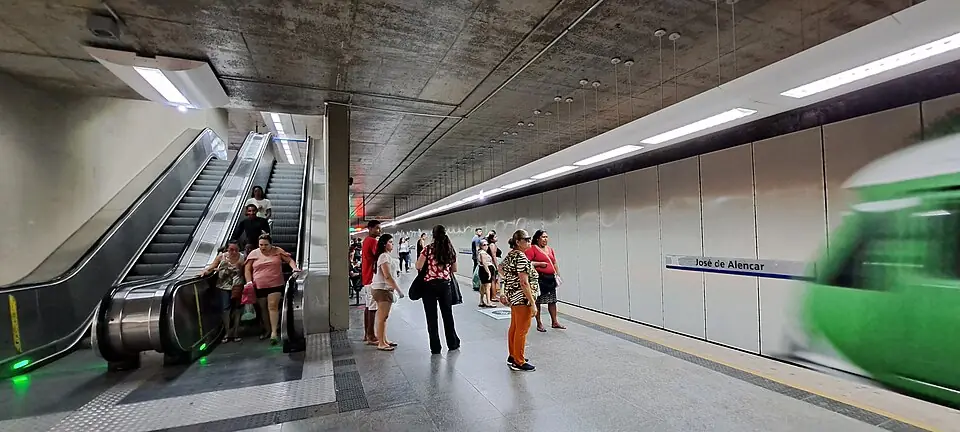
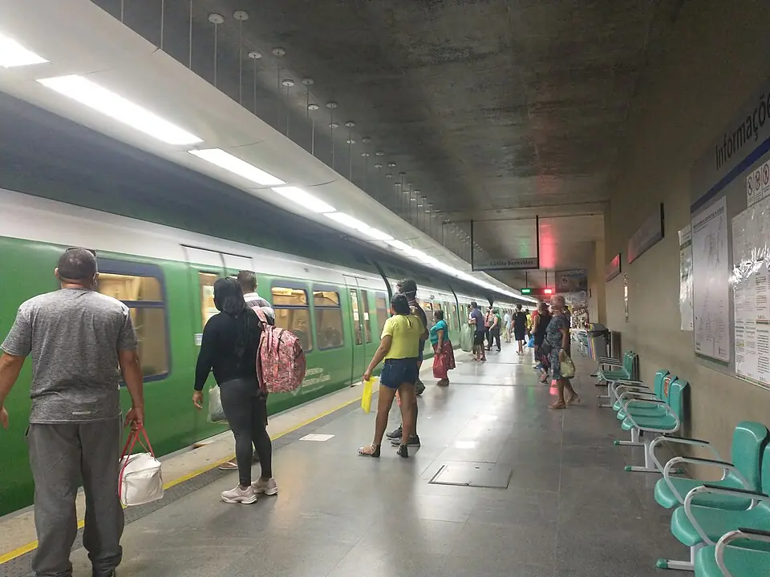
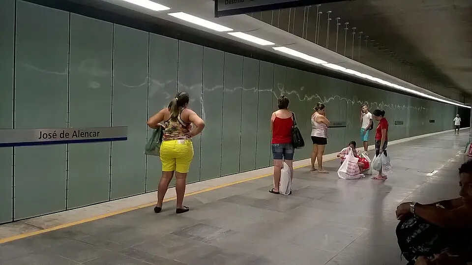
Fotos do Wikimedia Commons. Voltar ao começo das fotos ↑